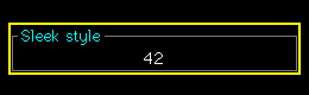

Themes and styles
Theme
SuperTheme t = SuperTheme::Dark(); // or Light(), or your own
t.Border = TFT_CYAN; t.Backdrop = TFT_BLACK;
t.LabelFont = &lgfx::fonts::Font0; t.LabelAlign = 0; t.BorderStyle = 2;
ctl.ApplyTheme(t); // colours, border size/style, padding, label defaultsTheme fields: Bg Fg Arrow Border Bezel BezelEdge Label Highlight Cursor CursorFg Sel SelFg Backdrop BorderSize BorderStyle Padding PressMs LabelFont LabelAlign. LabelFont = nullptr and LabelAlign = -1 mean "leave each control's own".
Border styles
| Style | Look |
|---|---|
BORDER_STANDARD | Plain frame of SetBorder(size, colour) |
BORDER_THREED | Bevelled frame (SetBezelColors) |
BORDER_SLEEK | One-colour frame with the label sitting on the frame line like a fieldset legend. Left / right alignment draws a short stub; a too-long label is cut and ends in "...". The visible frame extends half a label height beyond the control's box. |

Labels
SetLabel(text, LABEL_ABOVE | LABEL_BELOW), SetLabelFont, SetLabelColor, SetLabelAlign, SetLabelGap. By default a label uses the control's body font at construction (so a big-font box gets a big label) and left alignment.
Focus look
DrawPreview: unfocused = normal look dimmed to PreviewBrightness (default 85 %); focused = full brightness plus a highlight box. There is never a cursor outside a real edit. SetEnabled(false) draws the control dimmed and makes it uneditable and skipped by the form.